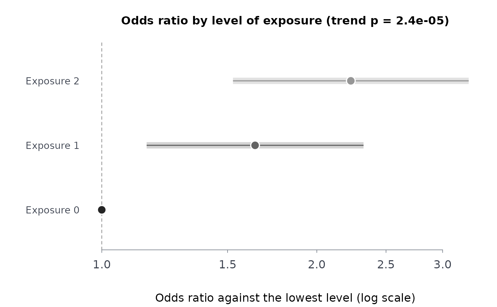

For counts of an outcome (suicidal thoughts, distress) among people with 0, 1 or 2 generations of residential school attendance in their family (or any ordered exposure), the odds ratio of each level against the lowest level, with Woolf intervals, and the Cochran-Armitage test for a trend across the levels.
Usage
exptrnd(cases, n, dose = seq_along(cases) - 1L, conflvl = 0.95)Value
A data frame with dose, cases, n, proportion,
orratio, lower, upper; the trend test is the attribute
trend (an htest).
Details
With \(a_k\) cases and \(b_k = n_k - a_k\) non-cases at level \(k\), the
odds ratio against the lowest level is \((a_k/b_k)/(a_1/b_1)\), with Woolf's interval
\(\exp\{\log OR \pm z\sqrt{1/a_k + 1/b_k + 1/a_1 + 1/b_1}\}\). When any cell is
empty, one half is added to every cell of every level (Haldane-Anscombe), so every odds
ratio is finite. The trend test is the Cochran-Armitage test (prop.trend.test)
with the levels as scores. Counts must be unweighted. For a complex survey, take the
weighted analysis from the survey itself (svydes): this function
is for published or aggregated counts.
References
McQuaid RJ, et al. (2017), see genexpo.
Examples
# made-up counts by 0, 1 and 2 generations of attendance, to show the computation
et <- exptrnd(cases = c(60, 95, 70), n = c(500, 520, 300))
et
#> dose cases n proportion orratio lower upper
#> 1 0 60 500 0.1200000 1.000000 1.000000 1.00000
#> 2 1 95 520 0.1826923 1.639216 1.155582 2.32526
#> 3 2 70 300 0.2333333 2.231884 1.526430 3.26337
plot(et)
